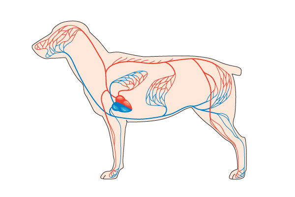
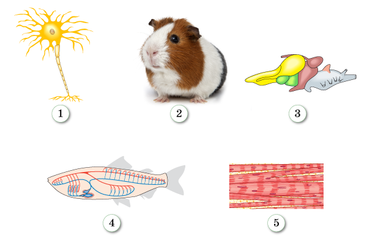

Авторизация участника
Авторизация участникаЗадание 1. Иерархия многоклеточного организма
Вставьте верные биологические термины, ориентируясь по опорным начальным буквам.
Т
Т
П
С
М
Н
О
С
Задание 2. Соотнеси ткани и их функции
Последовательно нажимайте на ткань слева и её функциональный пограничный маркер справа.
Покровная
Гладкая мышечная
Рыхлая соединительная
Эпителиальная
Хрящевая
Поперечно-полосатая
Нервная
Костная
Жидкая соединительная
Жир (запас энергии)
Движение внутр. органов
Пограничный барьер
Защита
Движение в пространстве
Раздражение
Скелет
Связки
Транспорт веществ
Задание 3. Системы органов и их функции
Последовательно нажимайте на систему органов слева и соответствующую ей функцию справа.
Нервная
Дыхательная
Пищеварительная
Половая
Опорно-двигательная
Выделительная
Кровеносная
Газообмен
Транспорт веществ
Опора и движение
Согласованность деятельности
Переваривание пищи
Размножение
Вывод продуктов распада
Задание 4. Биологические термины организации
Выберите правильные термины из выпадающих списков для заполнения смысловых пропусков в тексте.
Организм многоклеточного животного состоит из
. Они образуют
, которые входят в состав
. Органы образуют
. А системы органов в свою очередь образуют целостный
. Например, головной мозг животного образован
тканью и входит в состав
.
Задание 5. Свойства тканей
Какая ткань обладает способностью возбуждаться и проводить возбуждение в организме животного?
Задание 6. Анатомический анализ
Какая система органов изображена на рисунке?

Задание 7. Уровни организации
Какой цифрой в рисунке отмечена целостная система органов животного организма?
